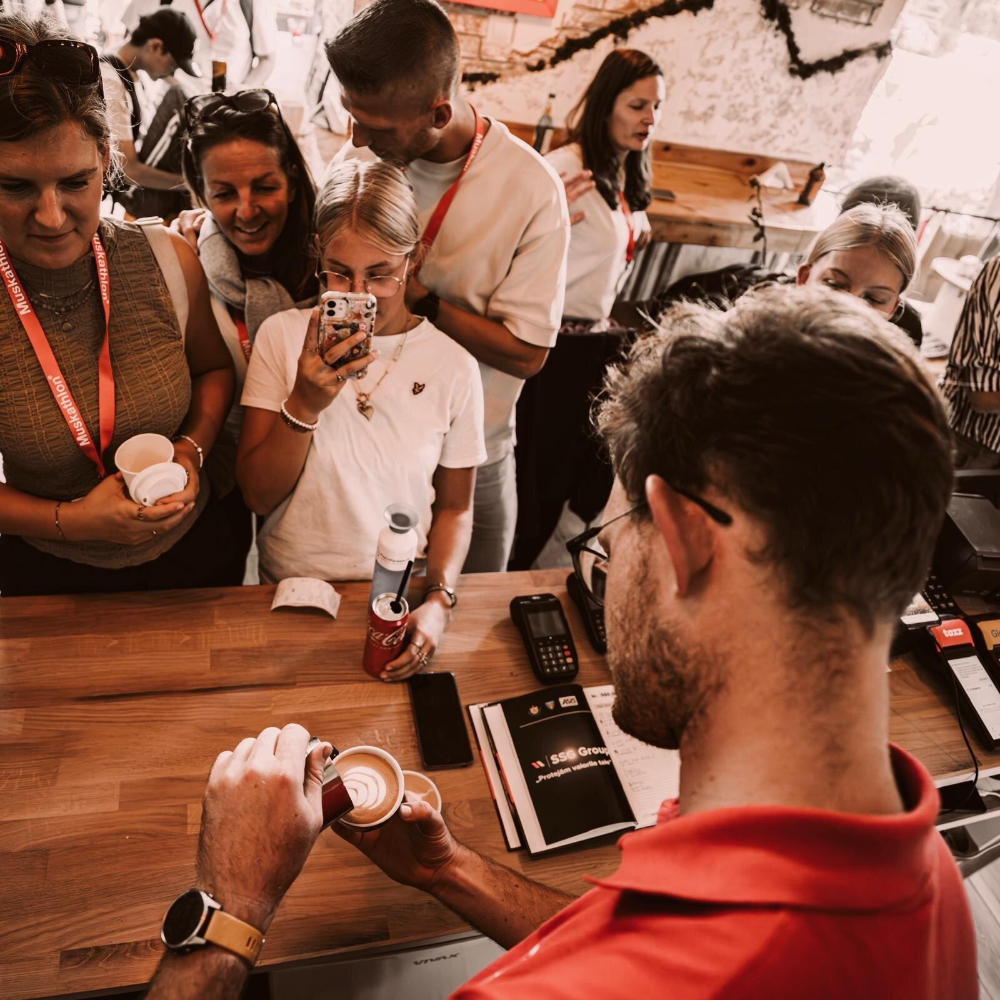
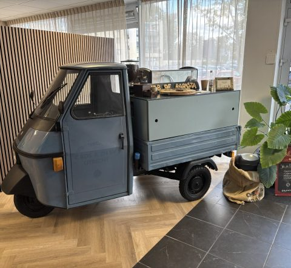
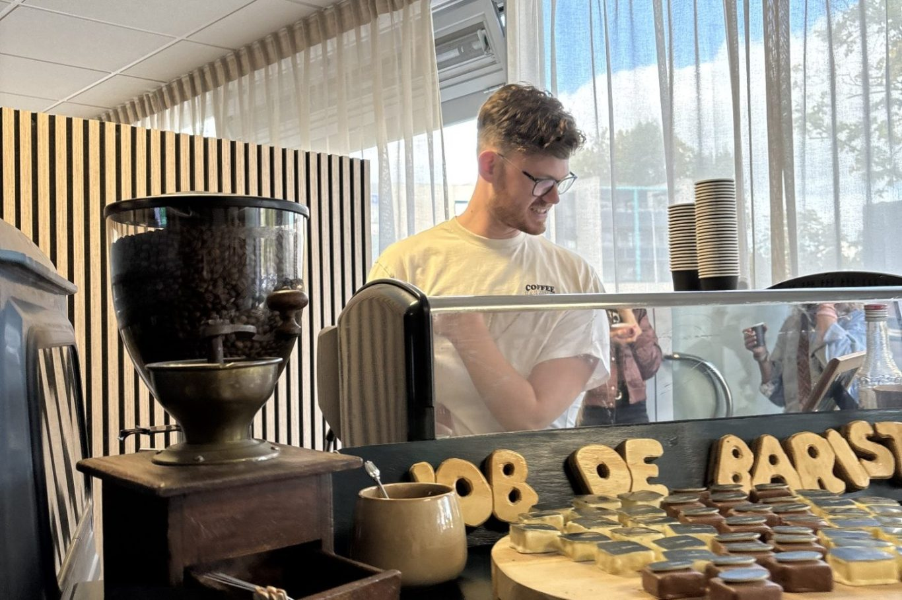
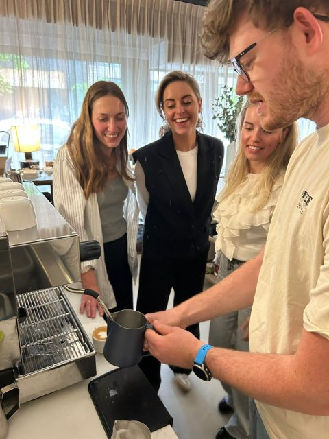
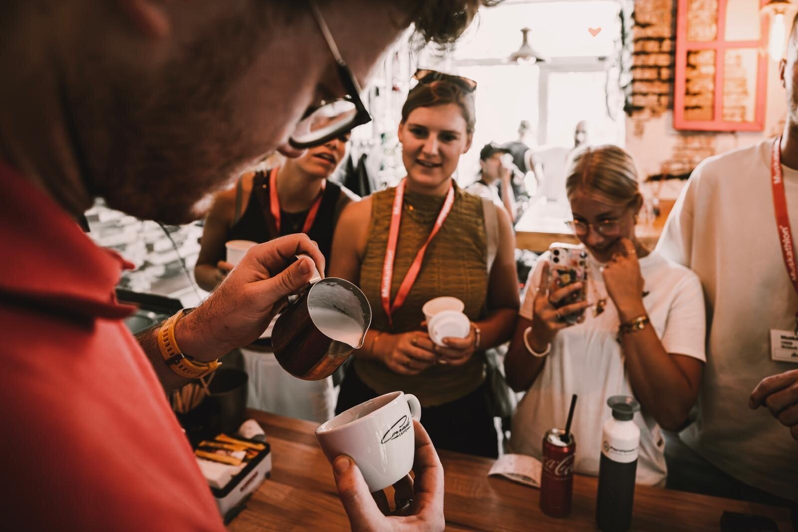
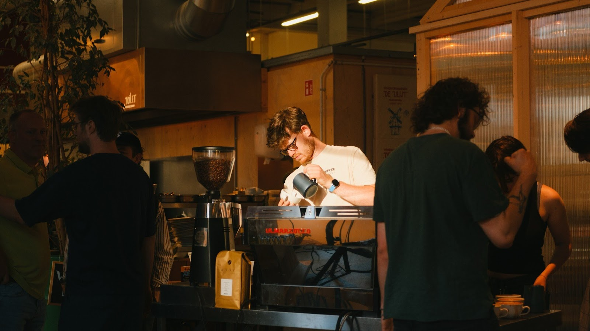

Barista op locatie in Barneveld
Het feest begint bij de koffie.
Job komt met zijn koffiekar naar je bruiloft, verjaardag of bedrijfsevent en schenkt echte espresso met latte art. Of leer het zelf, tijdens een workshop aan huis.
5,0 op Google, uit 8 reviews


Jouw barista op locatie
Bruiloft, jubileum, verjaardag of zelfs een brandoefening: Job rijdt voor met de Piaggio of zet de draagbare koffiebar neer. Je gasten krijgen ambachtelijke koffie, precies zoals zij hem willen, met latte art erbovenop.
Thuis, op het werk of op een evenement. Al te reserveren vanaf 2 uur, voor kleine en grote groepen.
Vraag je datum aan- Ervaring
- 8
- jaar barista-ervaring in specialty coffee
- Wedstrijden
- 7
- wedstrijddeelnames in latte art
- Koffiebars
- 2
- mobiele koffiebars: de Piaggio en de draagbare bar

Zelf leren schenken
Van beginner tot ervaren barista. Job deelt wat hij weet over koffie en latte art, en laat je vooral veel zelf oefenen.

Thuisbarista: workshop aan huis
Twee uur in je eigen keuken. Je leert de perfecte espresso zetten en de basis van latte art, met je eigen machine. Een mooi cadeau voor een koffieliefhebber.
- Duur
- 2 uur
- Groep
- 2 tot 4 pers.
- Prijs
- € 250

Latte art masterclass
Van strakke hartjes tot rosetta's en zwanen. Met persoonlijke aandacht haalt iedere deelnemer het beste uit zichzelf.
Teamuitje of bedrijfsworkshop
Samen leren en samen koffie drinken. Op maat voor je groep, en met grotere teams werkt Job in meerdere rondes, zodat iedereen aan de beurt komt.
Elke kop een klein kunstwerk
Wat gasten zeggen
5,0 op Google, 8 reviews
"Job heeft met zijn koffie ons feest smaak gegeven. Leuk hoe hij ook mee dacht. En: het oog wil ook wat: zijn koffie'kar' ziet er geweldig uit. Daarnaast regelde Job voor ons geweldige bonbons!!!"
"Job heeft op mijn 40e verjaardag mijn gasten voorzien van koffie, thee en warme chocomel. Wat een succes! Het contact vooraf was al meteen leuk. Job heeft speciaal voor mij een nieuwe latte art geoefend en iedereen was super enthousiast over zowel Job als zijn heerlijke koffie. Absoluut een aanrader!"
"Job gevraagd voor een workshop aan huis als verjaardagscadeau voor mijn man. Het was een zeer leerzame en leuke workshop. Onder een gezellige sfeer veel informatie gehad."
"Fantastisch barista! Job heeft veel kennis over koffie en alles wat daarbij komt kijken. Echt een aanrader om Job uit te nodigen voor jouw feestje of bruiloft. Ook kan je bij hem een latte art workshop in te plannen! Leuk om met vrienden te doen of bijvoorbeeld als personeelsfeestje. ..."
"De Barista Workshop aan huis van Job was een erg leuke en leerzame ervaring! Hij deelde zijn kennis op een duidelijke en enthousiaste manier en geeft volop ruimte om zelf te oefenen. Dankzij zijn tips en uitleg halen we nu veel meer uit onze espressomachine. Absoluut een aanrader voor iedereen die van goede koffie houd"

Over Job
Passie en kwaliteit, daar draait het om. Job gelooft in de kracht van goede koffie op momenten dat mensen samenkomen, en deelt zijn kennis graag.
Zijn specialiteit is latte art. Daarin geeft hij trainingen aan barista's, workshops aan liefhebbers en masterclasses aan bedrijven die hun team goede koffieskills willen bijbrengen.
Zet de koffie maar klaar.
Vertel Job wat je viert, wanneer en met hoeveel gasten. Of welke workshop je zoekt. Hij denkt graag met je mee.
Bel 06 83324439- koffie@jobdebarista.nl
- Adres
- Doornenburg 48, 3772 ZP Barneveld